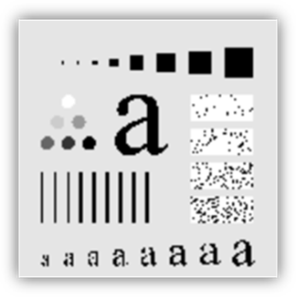
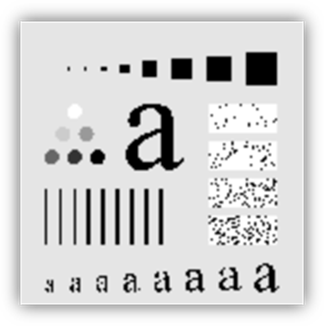
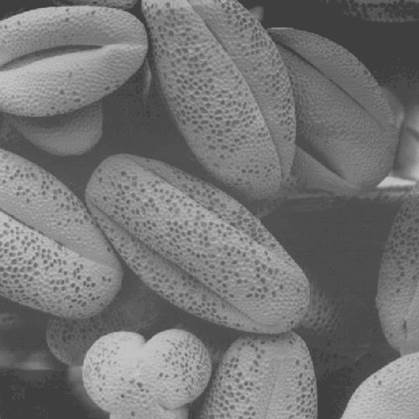
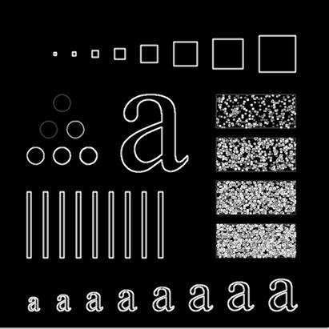

Image Processing in C++
-Devendra Pratap Yadav
The following image enhancements can be done using the program.
1. Rotate
2. Translate
3. Scale
4. Skew
5. Negative
6. Log Transformation
7. Inverse Log Transformation
8. Gamma Transformation
9. Contrast Stretching
10. Gray Level Slicing
11. Bit Plane Slicing
12. Histogram Equalization
13. Adaptive Histogram Equalization
14. Histogram Matching
15. Mean Filtering
16. Weighted Mean Filtering
17. Median Filtering
18. Sobel Filtering
19. Laplacian Filtering
20. HighBoost Filtering
21. Unsharp Masking
Whenever
available, we compare our result to OpenCV’s inbuilt function.
The program provides a menu type input to perform various functions on the
image.
1. Rotate
We rotate the image using the affine transformation matrix.
Rotate by 30 degrees:
My Algorithm (Bilinear Interpolation) OpenCV
RMSE= 2.32
To rotate the image, we must use the inverse affine transform to avoid empty points in new image which don’t have any point of original mapping to them.
Bilinear interpolation reduces jagginess and provides smooth image.
We conclude that bilinear interpolation is better for rotation as it provides smooth image.
2. Translate
We can translate using the affine matrix as well.
Using same
original image as rotation, Translate by x=100, y=-50
Result:
The image goes out of the boundary and some data is lost while translating it.
3. Scale
Scaling can
be done with affine transformation matrix as well.
We can use both nearest neighbor and bilinear interpolation.
Scale to 2x in both x and y
OpenCV Mine (bilinear)
 

Nearest Neighbor Original
We observe that bilinear provides smoother scaling.
4. Skew
Skewing/ Shearing
can be achieved with affine matrix as well.
Output of Skew X=0.3 , Y = 0.1 using bilinear interpolation.
Bilinear Nearest Neighbor
The bilinear image has less jagged edges and provides smoother result.
5. Negative
Negative
filter changes the pixel intensity as : f(x,y)= 255- f(x,y)
Result can be seen below:
 ORIGINAL NEGATIVE
ORIGINAL NEGATIVE
This can highlight interesting properties in the image.
6. Log Transformation
Logarithm
transformation is : f(x,y) = c* log(1+f(x,y))
where, c= 255/log(256) to scale the values between 0 and 255.
Result can be seen below:
ORIGINAL TRANSFORMED
We observe that log transform significantly brightens the image and reveals darker details.
7. Inverse Log Transformation
It is the inverse function of the log transform function stated previously. We calculate the mapping for all gray values and then inverse the function.
Result can be seen below:
 ORIGINAL TRANSFORMED
ORIGINAL TRANSFORMED
This removes the washed out, low contrast look of the image and darkens it.
8. Gamma Transformation
Logarithm
transformation is : f(x,y) = c* f(x,y)^gamma, where, c= 1 and gamma varies.
here, f(x,y) is value between 0 and 1
Result can be seen below:
ORIGINAL TRANSFORMED
For gamma=5, we get the
above result. We can see that the image is significantly darkened.
For gamma<1, the image is brightened.
9. Contrast Stretching
We map the gray levels using a stretching function which takes two input points and generates the mapping as shown:
For input points (80,30) and (150,240) we get the result:
ORIGINAL TRANSFORMED

We see that the contrast is significantly improved after applying the function.
10. Gray Level Slicing
This refers to setting all pixel values to 0 except those in a given interval (low,high).
This helps to isolate image parts based on gray values
For input points low=150, high=200 we get the result:
ORIGINAL GRAY
LEVEL (150, 200)

This can isolate certain gray levels of the image and help in specific
analysis of image.
11. Bit Plane Slicing
Bit plane using bit k slicing
refers to setting all pixels having the kth bit set to 255 and those with kth
bit=0 to 0;
This separates the image into bit planes which may be combined to obtain
original image.
Bit=
7 Bit
= 4
This can reveal the number of pixel values above a given threshold i.e. 2^bit.
12. Histogram Equalization
Histogram equalization improves the contrast of the image using cumulative function and maps values so that pixel count is evenly distributed among all gray values.
ORIGINAL
Image
Original Histogram
Equalized Histogram
OPENCV MINE
RMSE= 11.5
We see that Equalization significantly improves contrast of the image
13. Adaptive Histogram Equalization
This
is same as Histogram Equalization except we divide the image into blocks and
compute equalized histogram for each block separately and interpolate the final
result for each pixel
ORIGINAL
ADAPTIVE H. E. SIMPLE H. E.
We can see that adaptive
H.E. shows more details in areas where simple H.E. is very dark.
Compared with OpenCV ADE, the RMSE = 25
14. Histogram Matching
In
this, we have a initial image and a final image. We have to map the histogram
of the initial to the final image.
INITIAL FINAL
Matched Image
We can see that the histogram of the image is similar to final histogram and the image has better contrast than before.
15. Mean Filtering
This
consists of simple spatial filtering matrix of 3x3 where each value is 1/9. This
averages the value of pixel according to its neighbors.
ORIGINAL MEAN
FILTERED

Comapred to OPENCV mean => RMSE= 6.31
16. Weighted Mean Filtering
Same as previous but center
has weight 4, with 4 neghborhood points having weight 2 and other have weight
1.
Compared to OPENCV Gaussian Blue : RMSE = 6.1
17. Median Filtering
This sorts the points in 3x3 neighborhood and takes the median of the sorted list.
ORIGINAL MEDIAN
This reduces noise greatly as can be seen in the bottom right boxes in the image.
Comapred to OPENCV median : RMSE=8.3
18. Sobel Filtering
This uses two spatial filtering matrices to get gradients in x and y direction. Finally we get edges in the image.
ORIGINAL SOBEL

19. Laplacian Filtering
By applying the Laplacian matrix, we can sharpen the image.
ORIGINAL SHARPENED
By calculating the difference in pixel values, we can increase intensity of edges to get sharp image.
20. HighBoost Filtering
This also gives sharpened image by subtracting the blurred image from original one.
F(x,y) = f(x,y)+k*(
f(x,y)-Fblur(x,y) )
The coefficient k is greater than one in this case.
ORIGINAL SHARPENED with k=5
This results in lower but better sharpening than laplacian filter.
21. Unsharp Masking
Similar to HighBoost but with k=1.
F(x,y) = f(x,y)+k*( f(x,y)-Fblur(x,y) )
ORIGINAL SHARPENED